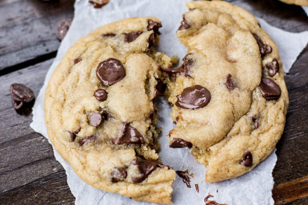

The Best Chocolate Chip Cookies

Recipe by: My Grandma
Prep Time
45 Min
Ingredients
- 1 1/2 cup (3 sticks) butter, softened
- 1 cup brown sugar
- 1 cup granulated suagr
- 1 Tbl vanilla instand pudding powder
- 2 Tbl milk
- 2 Tbl vanilla extract
- 2 eggs
- 4 cups all purpose flour
- 2 tsp baking soda
- 1/2 tsp salt
- 4 cups chocolate chips
- 1 cup chopped walnuts or pecans (optional)
How to make Mama's Recipe: The Best Chocolate Chip Cookies
- Preheat oven to 350 degrees
- Beat butter and sugars together until light and fluffy
- Stir in pudding mix, milk and vanilla extract
- Beat in eggs
- Add dry ingredietns and stir until combined
- Stir in chocolate chips and nuts
- Place 1 1/2 inch balls of dough 2 inches apart on an ungreased cookie sheat
- Bake 8-10 minutes or until golden brown
Nutrition Information
Probably bad for you, but who cares. MMMMMM COOKIES!!!! nom nom nom
This recipe was altered from Martha Stewart.